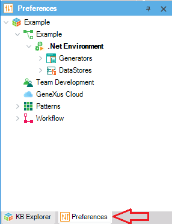
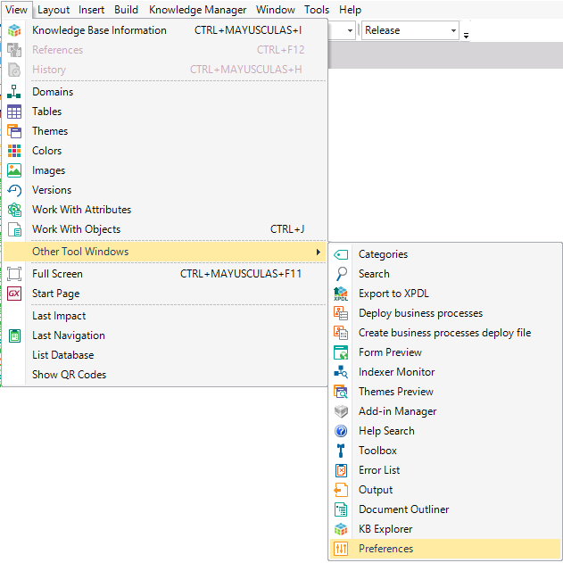

You can find the Preferences window in the tab next to the KB Explorer; this is where you can set the Knowledge Base properties, the Version properties and manage the Environments, Generators and Data Stores.  To open the preferences window, go to View > Other Tool Windows > Preferences:  See AlsoKnowledge Base Versions
|